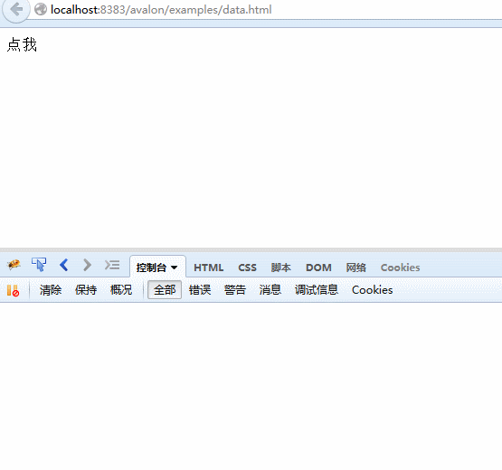

数据缓存(ms-data-*)
jQuery的许多功能都可以通过avalon的绑定属性来处理，如click方法对应ms-click， css方法对应ms-css，toggle方法对应ms-visible，它的数据缓存功能avalon也搬过来了。 但不同于jQuery的是，avalon是直接将数据保存到元素节点的HTML5的data-*属性上。 在从data-*属性还原数据时，它会简单的数据转换，再返回给你。
在ms-data绑定中，考虑到如果将对象转换为字符串再还原会丢失函数什么的，因此它们会直接保存到元素之上。
<!DOCTYPE html>
<html>
<head>
<title>TODO supply a title</title>
<meta charset="UTF-8">
<meta name="viewport" content="width=device-width">
<script src="avalon.js"></script>
<script>
avalon.define({
$id: "test",
$skipArray: ["array", "object"],
number: 111,
number2: NaN,
bool: false,
bool2: true,
nn: null,
vv: void 0,
array: [1, 2, 3],
date: new Date,
object: {
name: "这是数据"
},
show: function() {
var elem = avalon(this)
console.log(
elem.data("number"), elem.data("number2"),
elem.data("bool"), elem.data("bool2"),
elem.data("null"), elem.data("void"),
elem.data("fn"), this["data-array"],
this["data-date"], this["data-object"]
)
}
})
</script>
</head>
<body ms-controller="test">
<div ms-data-number="number" ms-data-number2="number2" ms-data-bool="bool" ms-data-bool2="bool2" ms-data-void="vv" ms-data-null="nn" ms-data-array="array" ms-data-date="date" ms-data-object="object" ms-data-fn="show" ms-click="show">点我</div>
</body>
</html>
这是一个很简单的绑定，没什么好说的，只要记住对象与数组是直接保存在元素节点上就行了。下面是它的源码：
//1.3.8的源码
// bindingHandlers.data 定义在if.js
bindingExecutors.data = function(val, elem, data) {
var key = "data-" + data.param
if (val && typeof val === "object") {
elem[key] = val
} else {
elem.setAttribute(key, String(val))
}
}